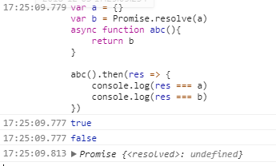

组里的一个有趣又很严谨的同事，今天在纠结一个不看起来是问题的问题，其实这种感觉就像你经常这么用或者这么想的一个东西，某一天某个时刻，你突然不知道为什么了，就像我偶尔会去纠结为什么某个汉字是这样写：

他认为最后应该 res === b,而不是 res === a, 我认为很明显应该 res === a, 因为大家平时一直都是这么用的, 但是跟他讲理由的时候，竟然语塞了。
关于 async 🚶
于是我去找了一段 MDN 上的解释：
当调用一个 async 函数时，会返回一个 Promise 对象。当这个 async 函数返回一个值时，Promise 的 resolve 方法会负责传递这个值；当 async 函数抛出异常时，Promise 的 reject 方法也会传递这个异常值。
上面这句话我用两个粗体标明了两句话，第一句话意思明显，意为：
1 | let a = {} |
调用 test() 得到的是一个 Promise, 也就是无论函数内返回（return）的是什么（常量 or 字符串 or Promise or 其它）， async 总会用 Promise.resolve 包一层，如若 async 里面有异常， 会 throw Error。
如果 test 内什么都不返回，也会得到 Promise.resolve(undefined), 总之 async 总返回一个 Promise 对象。
再看后面一句解释： Promise 的 resolve 方法会负责传递这个值；
哇，是不是突然间觉得我同事疑惑的是对的了。其实不要受这句话的影响。它说的传递，其实就是return过去的时候是传递的。总结下： 我们就理解为：async 返回了一个包含改值的 Promise。
分析下面这段代码的执行：
1 | test() |
那么为什么 test().then(a => { a === {} }) 又是对的了呢？ 不是说返回了一个 Promise 吗？ 怎么又是一个对象值了？(注意这里是值引用，所以可以直接这么比较)
这是因为 Promise.then 里面会在重新接收这个值的时候，得到的不再是一个 Promise 对象，而是一个被解析过了的值。 也就是说下面这段代码的含义：
1 | .then(r => { |
这个时候，你 then 里面的值，就跟你用 await 得到的一样了。
关于 await 👂
await 等待的是什么呢？
await 操作符用于等待一个Promise 对象。它只能在异步函数
async function中使用。
上面是 MDN 里的说明，我觉得不太对， await 不一定是等待一个 Promise 对象，它要等待的是一个 Promise 对象或者任何要等待的值。。
如果它等待的不是一个 Promise 对象，如 await 3 , 那么表达式的运算结果就是它等待的东西。
如果它等待的是一个 Promise 对象， 如 await Promise.resolve(3), 那么 await 会阻塞后面的代码，等待 Promise 对象 resolve or reject。
看下下面这种情况：
1 | var a = Promise.reject({}) |
很明显， obj 是等于 null 的，因为 await 等待的是一个 reject 的结果。导致了异常被抛出来了。所以赋值等工作都没有进行。
await 表达式会暂停当前
async function的执行，等待 Promise 处理完成。若 Promise 正常处理(fulfilled)，其回调的resolve函数参数作为 await 表达式的值，继续执行async function。若 Promise 处理异常(rejected)，await 表达式会把 Promise 的异常原因抛出。
另外，如果 await 操作符后的表达式的值不是一个 Promise，则返回该值本身。
MDN 的解释跟我们理解的相同。也就是说 await 如果得到的是一个 reject 的结果，会直接 throw 一个 Error 出来。这也是为什么为了避免报错，我们需要对 async await 进行 try catch 的原因。
使用 async await 要注意的地方
async await 设计本身是为了让我们防止地狱回调的，但是是不能够滥用。比如下面这个很经典的例子：1
2
3
4
5
6(async () => {
const pizza = await selectPizza()
const drink = await selectDrink()
order(pizza, drink); // async call
})();
上面的 getPizzaInfo 和 getDrinkInfo 实际并没有任何依赖关系，这么写还增加了等待的时间。所以在用 async await 的时候，一定要充分理解他们的关系。可以优化如下：
1 | (async () => { |
再举个例子：1
2
3
4
5
6
7a(() => {
b();
});
c(() => {
d();
});
最后写成了：1
2
3
4await a();
await b();
await c();
await d();
这种原本 d 只需要等待 c 的，结果变成要等待 a,b,c。 时间慢了很多。性能不好。稍改一下。
1 | const aPromise = a() |
这样会稍微好点了，但是还是有问题， d由原来的需要等待 c, 变成了需要等待 a,c(如果a的返回时间要大于c)
所以可以改成下面这两种方式：1
2
3
4
5
6
7
8
9
10
11
12
13
14
15
16
17
18(async() {
await a()
b()
})()
(async() {
await c()
d()
})()
// 或者改为
Promise.all([a(), c()])
.then(res => {
return Promise.all([b(), d()])
})
总之用 async, await 的时候得多想想。
总结
有好奇心和探索知识的欲望是好事，当别人问你的问题的时候，如果你不能把别人解释清楚的时候，那么可能他的问题同样就是你的问题~